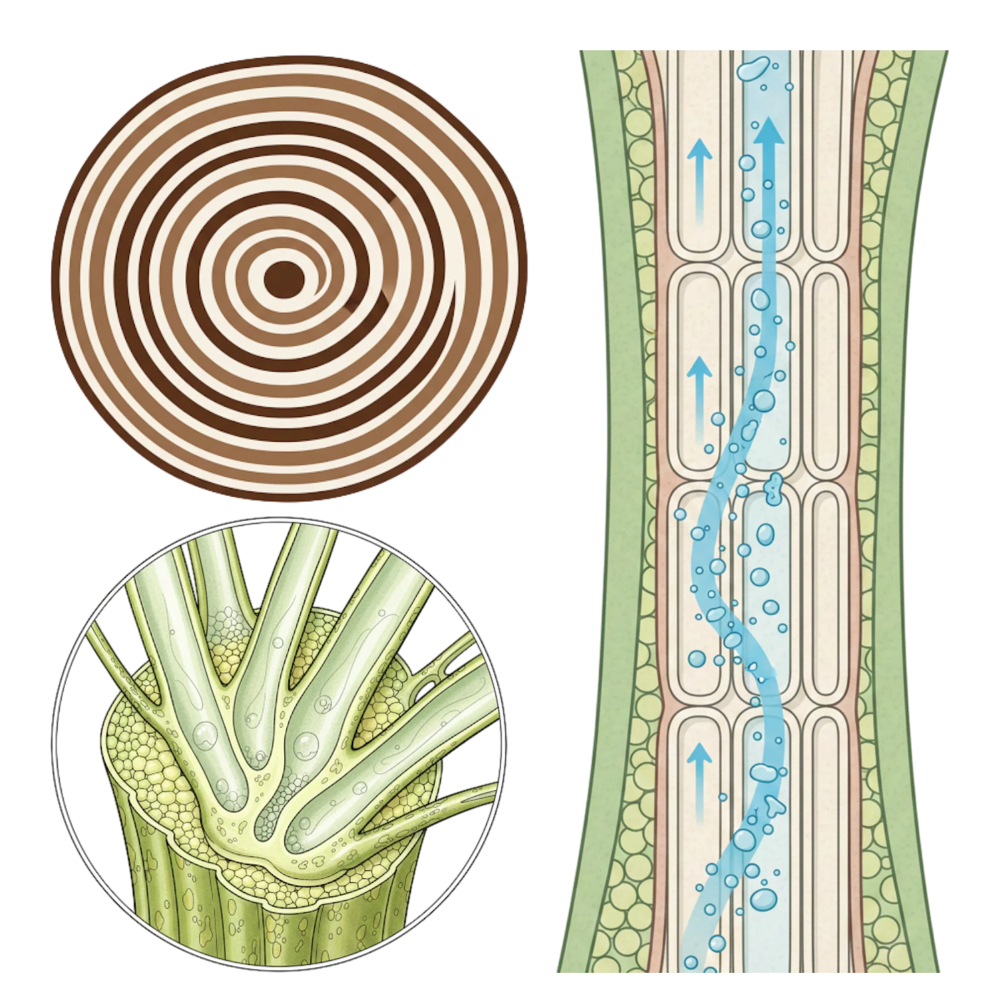
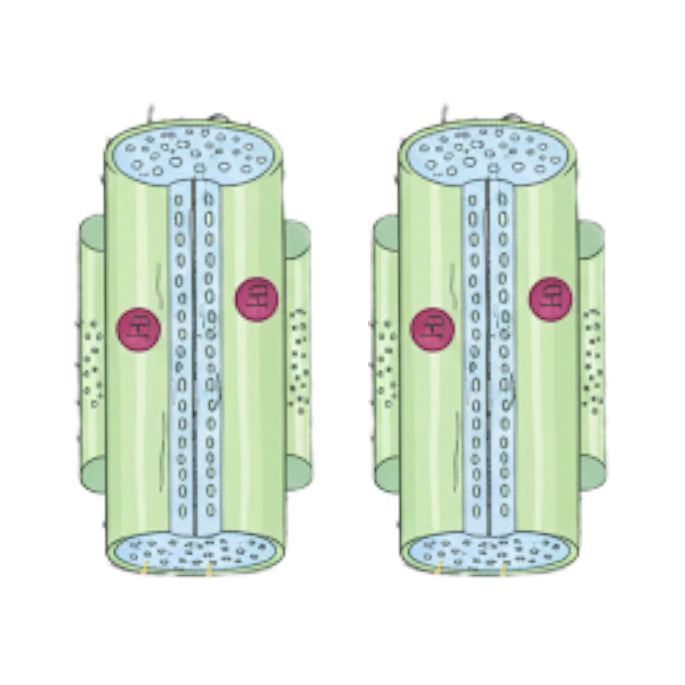
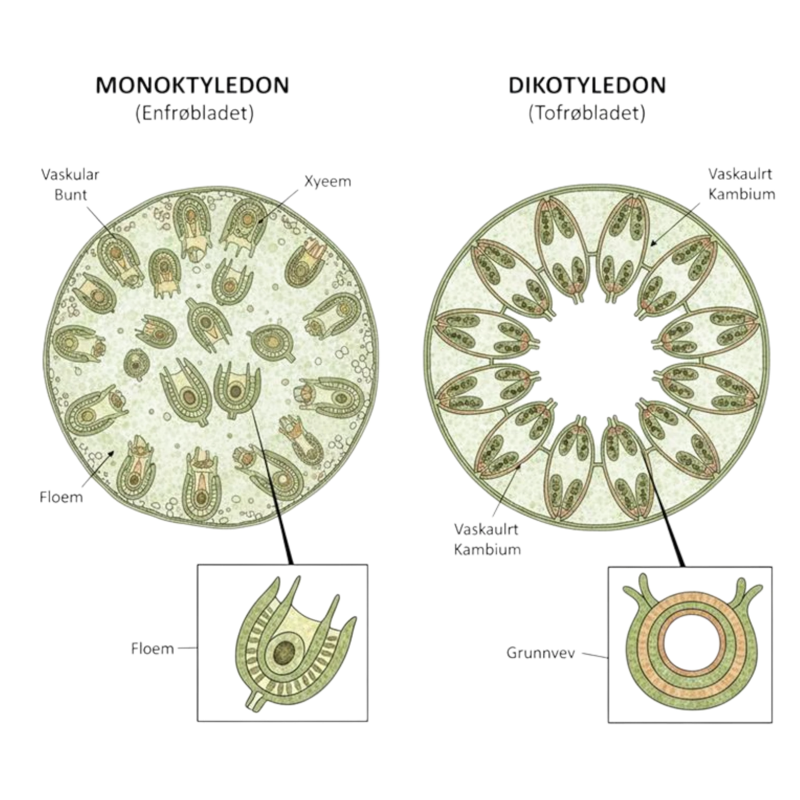

Stengel 🌱
Stengelen (stammen hos trær) gir planten mekanisk støtte og sørger for transport mellom røtter og blader.
Stengelen består av en sentralsylinder som inneholder ledningsvev.

URL: Ilustrasjon av Sentralsylinderen
Ledningsvev: Plantenes transportsystem. Består av rør (Vedrør og Silrør) som frakter stoffer rundt i planten.
Vedrør → Vann og Mineraler
Vedrørene har som oppgave å frakte vann og mineraler fra røttene og opp til bladene.
Transporten skjer kun oppover i planten. Vedrørene er bygget opp av døde celler som er stablet oppå hverandre og danner lange, sammenhengende rør. Dette gjør transporten effektiv.
Vanntransporten skjer hovedsakelig i de ytterste og yngste lagene av stammen. Bevegelsen av vann drives blant annet av fordamping (transpirasjon) fra bladene, samt rottrykk.
Vedrørene er også grunnlaget for dannelsen av årringer i trær.
- Om våren dannes store og tykke vedrør
- Om høsten dannes det tynnere vedrør
Ved å telle de lyse årringene kan man finne alderen på tre.
URL: Ilustrasjon av åringer i en trestamme og tilsvarende vedrør
Silrør → Sukker og Næring
Silrøret sørger for transport av sukker og næring fra bladene og til resten av planten.
Transporten kan skje både oppover og nedover i planten. Den er aktiv og styres ved hjelp av følgeceller.
I motsetning til vedrørene er silrørene oppbygd av levende celler som er stablet oppå hverandre
URL: Ilustrasjon av Silrør i en plante
Enfrøede vs Tofrøede
Hos enfrøbladede planter ligger vedrør og silrør sammen og spredt rundt i hele stengelen.
Hos tofrøbladede planter ligger vedrør og silrør samlet i en ring. Vedrørene ligger innerst og silrørene ytterst.
URL: Forskjellen i ledningsvevet hos enfrøbladet og tofrøbladet plante
Fordelen med stengel
- Planten holder seg stødig oppe
- Stekker seg mot lyset
- Lettere kunne spre pollen og frø